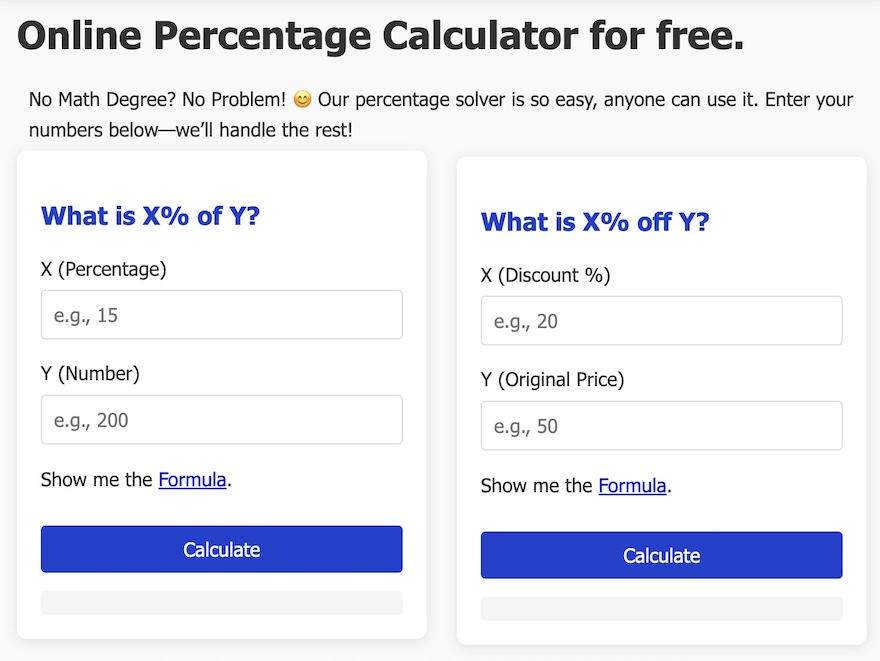

Understanding how to calculate percentages is a fundamental math skill that applies to countless real-world situations, from calculating discounts during shopping to determining test scores and analyzing financial data. If you've ever wondered how percentages work, you're in the right place. This comprehensive guide will walk you through everything you need to know about the percentage formula and its applications.
Master Percentage Calculations Today!
Ready to become a percentage calculation expert? Visit PercentageFormula.net for interactive tools, practice problems, and more detailed explanations to help you master this essential math skill.

What is a Percentage?
The word "percentage" comes from the Latin "per centum," meaning "by the hundred." A percentage is a way to express a number as a fraction of 100. It's represented by the percent sign (%). When we say 50%, we mean 50 out of 100, or 50/100, which simplifies to ½.
Percentages are everywhere in daily life:
The fundamental percentage formula is straightforward:
Percentage = (Part / Whole) × 100
Where:
Part is the portion of the whole you're interested in
Whole is the total or complete amount
The result is multiplied by 100 to convert it to a percentage
Example 1: Calculating a Test Score
Suppose you answered 45 questions correctly out of 60 on a test. What percentage did you score?
Using the formula:
Percentage = (45 / 60) × 100 = 0.75 × 100 = 75%
While the basic formula remains the same, percentage calculations can be categorized into three main types:
1. Find the Percentage of a Number
This is when you want to know what a certain percentage is of a given number.
Result = (Percentage / 100) × Number
Example 2: Calculating a Discount
A $200 jacket is on sale for 25% off. What's the discount amount?
Discount = (25 / 100) × 200 = 0.25 × 200 = $50
Sale price = $200 - $50 = $150
2. Find What Percentage One Number Is of Another
This is the standard percentage calculation we saw earlier.
Percentage = (Part / Whole) × 100
Example 3: Calculating Battery Percentage
Your phone shows 3,450 mAh remaining out of a 4,000 mAh battery. What percentage remains?
Percentage = (3,450 / 4,000) × 100 = 0.8625 × 100 = 86.25%
3. Find the Whole When the Percentage Is Known
This is useful when you know a part and what percentage it represents of the whole.
Whole = Part / (Percentage / 100)
Example 4: Determining Total Sales
A salesperson made $8,400 in commission, which is 7% of their total sales. What were their total sales?
Total sales = 8,400 / (7 / 100) = 8,400 / 0.07 = $120,000
Step-by-Step Guide to Calculating Percentages
Let's break down the percentage calculation process into simple steps:
Identify the part and the whole: Determine which number represents the portion and which represents the total.
Divide the part by the whole: This gives you a decimal number between 0 and 1.
Multiply by 100: Convert the decimal to a percentage by moving the decimal point two places to the right.
Add the percent sign: Don't forget to include the % symbol to indicate it's a percentage.
Common Percentage Conversions
It's helpful to memorize some common percentage conversions:
Fraction
Decimal
Percentage
1/2
0.5
50%
1/4
0.25
25%
3/4
0.75
75%
1/5
0.2
20%
1/10
0.1
10%
1/100
0.01
1%
Calculating Percentage Increase and Decrease
Percentages are often used to measure changes. The formula for percentage change is:
Percentage Change = [(New Value - Old Value) / Old Value] × 100
Example 5: Calculating Price Increase
A product's price increased from $80 to $100. What's the percentage increase?
Percentage Increase = [(100 - 80) / 80] × 100 = (20 / 80) × 100 = 0.25 × 100 = 25%
Example 6: Calculating Population Decrease
A town's population decreased from 12,000 to 11,400. What's the percentage decrease?
Percentage Decrease = [(11,400 - 12,000) / 12,000] × 100 = (-600 / 12,000) × 100 = -0.05 × 100 = -5% (or 5% decrease)
Practical Applications of Percentage Calculations
1. Financial Calculations
Percentages are crucial in finance for calculating:
Interest rates on loans and savings
Investment returns
Mortgage payments
Credit card APRs
Example 7: Calculating Simple Interest
You deposit $5,000 in a savings account with a 3% annual interest rate. How much interest will you earn in one year?
Interest = (3 / 100) × 5,000 = 0.03 × 5,000 = $150
2. Shopping and Discounts
Understanding percentages helps you:
Calculate sale prices
Compare discounts
Determine final prices after markdowns
Example 8: Stacked Discounts
An item originally priced at $200 has a 20% discount, plus an additional 15% off the sale price. What's the final price?
First discount: (20 / 100) × 200 = $40 → Sale price = $160
Second discount: (15 / 100) × 160 = $24 → Final price = $136
3. Statistics and Data Analysis
Percentages help interpret data by:
Showing proportions in surveys
Calculating growth rates
Comparing parts to wholes
Tips for Solving Percentage Problems
Always identify what represents 100%: This is your baseline for comparison.
Convert percentages to decimals when multiplying: Move the decimal point two places left (25% becomes 0.25).
Convert decimals to percentages when presenting results: Move the decimal point two places right (0.35 becomes 35%).
Use the percentage formula triangle: Cover the variable you want to find to see which operation to perform.
Check your answers: Does the result make sense in context?
Common Percentage Calculation Mistakes to Avoid
Even with a simple formula, errors can occur. Watch out for these common mistakes:
Confusing the part and the whole: Always double-check which number represents the total.
Forgetting to multiply by 100: This leaves you with a decimal instead of a percentage.
Misplacing decimal points: Especially when converting between percentages and decimals.
Adding percentages of different wholes: Percentages can't be added unless they relate to the same base amount.
Assuming percentage points and percentages are the same: A 5% increase from 10% is 10.5%, not 15%.
Advanced Percentage Concepts
Once you've mastered basic percentage calculations, you can explore more advanced applications:
1. Compound Percentage Changes
When multiple percentage changes occur sequentially, they don't simply add up.
Example 9: Compound Interest
You invest $1,000 at 5% annual interest compounded yearly for 3 years.
Year 1: 1,000 × 1.05 = $1,050
Year 2: 1,050 × 1.05 = $1,102.50
Year 3: 1,102.50 × 1.05 = $1,157.63
The total growth is 15.76%, not 15%, due to compounding.
2. Percentage Points vs. Percentages
A percentage point is an absolute unit (1% = 1 percentage point), while a percentage change is relative.
Example 10: Interest Rate Increase
If an interest rate rises from 4% to 6%:
• The increase is 2 percentage points
• The percentage increase is (6-4)/4 × 100 = 50%
3. Reverse Percentages
Finding the original amount when you know the final amount and the percentage change.
Example 11: Original Price After Discount
A shirt costs $56 after a 30% discount. What was the original price?
$56 represents 70% of the original price (100% - 30%)
Original price = 56 / 0.70 = $80
Percentage Calculation Tools and Resources
While understanding the manual calculation is important, several tools can help:
Percentage calculators: Online tools that automate the calculations
Spreadsheet functions: Excel and Google Sheets have built-in percentage functions
Mobile apps: Many math apps include percentage calculators
Printable worksheets: For practicing percentage problems
Frequently Asked Questions About Percentages
Q: How do I calculate 20% of a number?
A: Multiply the number by 0.20 (which is 20/100). For example, 20% of 150 is 150 × 0.20 = 30.
Q: What's the difference between percentage and percentile?
A: A percentage is a proportion out of 100, while a percentile indicates what percentage of values are below a certain point in a data set.
Q: How do I add a percentage to a number?
A: Multiply the number by (1 + percentage as a decimal). To add 15% to 200: 200 × 1.15 = 230.
Q: How do I subtract a percentage from a number?
A: Multiply the number by (1 - percentage as a decimal). To subtract 20% from 500: 500 × 0.80 = 400.
Q: Why do we multiply by 100 in percentage calculations?
A: Multiplying by 100 converts the decimal fraction to a percentage, which is easier to understand and compare (e.g., 0.25 becomes 25%).